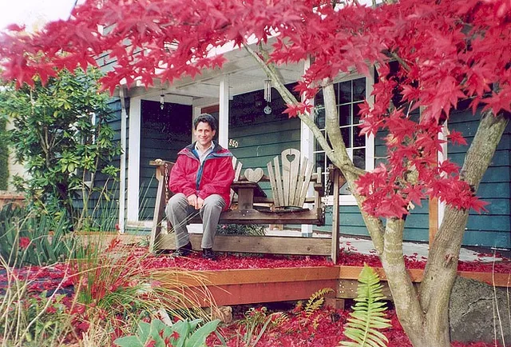

What is Acupuncture?
Acupuncture is a large part of our treatment program and is defined as the use of tiny needles, placed at various locations, to alleviate pain and help the animals organs function more efficiently...Read more on the acupuncture page!
About Us in Issaquah, Washington
Integrative Care for Your Pet's Complete Wellness...
Dr. Howard Friedman is the owner of Cougar Mountain Veterinary Hospital & Wellness Center, and has been practicing veterinary medicine since graduating from Michigan State University in 1990. He is a Certified Veterinarian Acupuncturist and a Certified Equine Chiropractic Adjuster. He has worked in the Seattle area since 1992, and specialized in critical care/emergency medicine before opening his own practice. He enjoys blending both traditional and contemporary medicine to provide the most effective and least obtrusive type of healing. The hospital staff is very knowledgeable in all the latest procedures, nursing care, anesthesia monitoring, post- operative recovery, surgical assistance and medical treatments. We are here to serve you as best as possible. Our goal is to meet your needs and the health care needs of your pet.
Hours:
Monday - Friday: 9:00am to 6:00pm
Saturday: 8:00am to 12:00pm
Sunday: Off
On Call Evening and Weekends (425) 369-9291
Find Us! Our Address: 880 Front St. S Issaquah, WA 98027